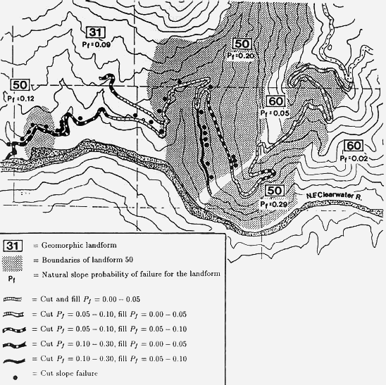

Rocky Mountain Research Station
Moscow Forestry Sciences Laboratory
1221 South Main Street, Moscow, ID 83843
https://forest.moscowfsl.wsu.edu/
| USDA Forest Service | Rocky Mountain Research Station | Moscow FSL | Soil and Water Engineering |
|---|
ABSTRACT: Evaluating the stability of variable landforms is important for land management planning on forest lands in the western United States and Alaska. This paper describes a rational means for considering both natural variability and measurement uncertainty in landslide hazard evaluation of both natural slopes, and constructed cut and fill slopes. Monte Carlo simulation is used to simulate the frequency distribution of the factor of safety on a given landform or slope. The probability of failure is taken as the relative frequency with which the factors of safety are less than or equal to one. The simulation program is written for IBM-PC's and compatibles, includes a menu-driven user interface, and allows the use of seven different input probability distributions to describe the natural variability and uncertainty of each input variable.
1. INTRODUCTION
Many forest lands in the western United States and Alaska are classified as
potentially unstable. Unless carefully planned and executed, timber harvesting
operations, road construction or other land management activities in these areas
can accelerate mass failure and may cause significant impacts on soil productivity
and water quality. Accurate assessment of potential landslide hazard early in
the planning process is essential. We believe a geotechnical stability model
approach for hazard assessment has advantages over subjective or statistical
approaches (e.g. Roth 1983) because it is widely applicable (model-based, not
data-based), and because it can be used for sensitivity studies and to predict
the effects of managerial actions. We also believe that a probabilistic approach
is essential when rationally considering the natural variability and uncertainty
of each input variable in a stability analysis. This paper describes two microcomputer
programs, LISA and SARA, which use Monte Carlo simulation to help quantify the
probability of slope failure for both natural and man-made slopes and to assess
the effect of management activities such as timber harvest.
2. MONTE CARLO SIMULATION
Monte Carlo simulation is useful for modeling an attribute that cannot be sampled
or measured directly, but can be expressed as a mathematical function of properties
that can be sampled. Factor of safety fits this situation. Although other probabilistic
methods are available for estimating landslide failure probabilities (e.g. Chowdhury
and Tang 1987), Monte Carlo simulation is the method used in LISA and SARA because
it allows all input variables to be treated stochastically, as is necessary
for a realistic stability assessment of large landforms where all variables
can have significant spatial variability and measurement uncertainty.
If we
want to predict a possible value of the factor of safety, we take a possible
value for each input variable and use an appropriate equation to calculate the
corresponding factor of safety value. This is known as one Monte Carlo pass
or iteration. In Monte Carlo simulation we generate a considerable number of
factor of safety values, say 1000, by repeated random, independent samplings
of a set of possible input values, and then calculate the corresponding factor
of safety value for each pass. The set of possible input values is described
by a probability distribution for each input variable. In the LISA and SARA
computer models, the user may choose a constant value or a uniform, normal,
lognormal, triangular, beta, histogram, or bivariate normal probability distribution.
The result is 1000 possible factor of safety values that can be displayed as
a histogram; the probability of failure (Pƒ ) then is obtained by dividing
the total number of passes into the number of calculated factor of safety values
which are less than or equal to one.
2.1 The performance functions
The LISA and SARA computer models use the infinite slope model as the performance
function to analyze the stability of natural slopes, and stability number charts
developed by Cousins (1978) and quantified by Pyles and others (1984) to analyze
the stability of man-made slopes, such as road cut and fill slopes or embankments.
The infinite slope equation used in the computer models is:
|
FS =
|
Cr
+ C′s + cos2α[qo
+ γ(D - Dw) + (γsat -
γw)Dw] tan φ′
|
|
sin α cos α[qo +
γ(D - Dw) + γsatDw]
|
where FS is the factor of safety, α is the slope of the ground surface in degrees, D is the total soil thickness, Dw is the saturated soil thickness, Cr is the tree root strength expressed as a cohesion, qo is tree surcharge, Cs is soil cohesion which can include both true soil cohesion and apparent soil cohesion due to capillary suction (Capp), φ′ is effective angle of internal friction, γ is moist soil unit weight, γsat is saturated soil unit weight, and γw is the unit weight of water (9.81 kN/m3). The Cousins equation is:
| FS = |
kNƒC
|
|
γh
|
where
k is an empirical coefficient developed by Prellwitz (1988), as discussed below;
Nƒ is Cousins' stability number;
C is cohesion which can include both
Cs and
Cr;
γ is moist soil unit weight; and
h is vertical height of the cut or fill.
The user may either specify h, or specify the cut and fill slope ratios
and road and ditch widths and the program will determine h by superimposing
a full bench, through fill, or self-balanced road prism on the natural slope.
Both models are well suited to Monte Carlo simulation because the critical failure
surfaces are assumed—the infinite slope model assumes a planar failure
surface (typically the bedrock surface) which is parallel to both the ground
surface and the phreatic surface, and the Cousins' method assumes a circular
arc exiting at the slope toe. Although both models tend to oversimplify in situ
conditions, they have been found to be adequate for planning purposes (Prellwitz
and others 1983, Sidle and others 1985); however, Cousins' stability number
charts do require modification to account for sloping bedrock and phreatic surfaces
typically found in mountainous terrain. This modification is accounted for by
the empirical factor, k, which relates the factor of safety estimated using
Cousins' charts to the critical failure circle (with a factor of safety of 1.00)
found using modified Bishop analysis for a variety of typical slope, groundwater
height and soil shear strength conditions (Prellwitz 1988).
2.2 Correlation between variables
To achieve a realistic simulation using Monte Carlo methods, the relationships
between dependent variables must be taken into account. The variables treated
as dependent in the LISA and SARA models are Cs and φ′,
and dry unit weight (γd) and φ′.
Although there exists some contradiction in the literature,
Cs and φ′
generally are considered to be inversely related with reported correlation coefficients
(r ) of -0.2 to -0.85 (Cherubini and others 1983). If this correlation is not
considered in the simulation, soil shear strength can be significantly overestimated
and underestimated, resulting in an increase in variance of simulated shear
strength. The bivariate normal probability density function (PDF) can be used
in LISA and SARA to model Cs—φ′ dependence.
The second relationship
considered by LISA and SARA is the positive correlation that exists between
γd and φ′. The models handle this correlation very
simplistically by using the same random number to sample from the univariate
distributions for γd and φ′; therefore, when a high
value is sampled for γd, a high value is sampled for φ′
to model the desired proportional relationship. This method produces r values
between γd and φ′ of 0.95 to 1.0 (with 1.0 occurring
when the same distribution type is used for both variables). This degree of
correlation is greater than typically found in nature; however, because the
infinite slope equation is generally insensitive to γd, the
Pƒ values are affected only slightly.
Dependence between other variables, such as an inverse
relationship between soil depth and ground slope, is sometimes observed. At
this time, LISA and SARA do not have the capability of allowing the user to
enter a functional relationship between selected variables to model such correlations
in a rigorous manner. Instead, the user must subdivide geomorphic landforms
into smaller units with narrow ranges of input values, so that within those
ranges, one could expect all other variables to be independent.
3. MEANING AND USE OF THE PROBABILITY OF FAILURE
The Pƒ , strictly speaking, is the total number of Monte Carlo
iterations divided into the number of calculated factors of safety with a value
less than or equal to one; however, it is common to view the probability of
an event as the likelihood of that event occurring. This meaning does not work
well for the Pƒ of a large, variable landform, because the event
of one failure occurring in a landform or along a proposed road location gives
a probability of landslide occurrence of one. It is more useful to think of
the Pƒ as the relative frequency of failure events in the analysis
area or along the road location. The Pƒ then can be used qualitatively
to make relative comparisons between landforms or road locations to identify
areas that should be targeted for additional analysis. The Pƒ
can be viewed as the probability of landslide occurrence if the area analyzed
is small enough (i.e., one slope or one drainage) so that only one failure could
physically occur within that area.
Typically in hazard assessments for
planning purposes, information comes primarily from soils and geology inventories
and aerial photo interpretation, with few actual field measurements. In this
case, the input distributions represent one's uncertainty about the variables
as well as one's best guess about their spatial variability across the landform;
therefore, because of the two-dimensional nature of the infinite slope analysis,
the estimated Pƒ can best be thought of as the likelihood that
any possible randomly selected cross-section through the slope would be analyzed
as unstable. As more data are available, the probability distributions of each
input variable represents more the spatial variability of that variable and
less the uncertainty. Here the Pƒ should be an estimate of the
expected percentage of area of the landform or of the length of the roadway
involved in failure during the period appropriate to the analysis — for example,
during the period of minimum root strength following timber harvest, or during
the rain or snow melt event causing the groundwater levels used in the analysis.
This interpretation of the Pƒ can help geotechnical specialists
recommend to land managers what level of Pƒ is excessive because
percentage area or road length in failure can be used to evaluate the possible
consequences of failure, such as an estimate of the quantity of material that
may impact downslope lands or streams.
The Pƒ estimated using LISA and SARA should
be reported as a conditional probability given that the groundwater distribution
used in the analysis (which is in part dependent on climatic events and thus
has its own probability of occurrence) does indeed occur. The Pƒ also should
be verified as reasonable by comparison with field observations of slope instability.
Used as an iterative tool, LISA and SARA can help the user document personal
judgments and observations about an area or road location, communicate them
to land managers and to other geotechnical specialists, and help identify factors
critical to landslide hazard assessment in a given area. The Pƒ
also can be used quantitatively in a risk analysis, such as an expected monetary
value (EMV) decision analysis. Research efforts are continuing in this area.
LISA and SARA do not simulate the sizes, numbers, locations
or types of failure that might occur (although LISA gives more accurate results
for translational failure modes, and SARA can give an indication as to whether
the failure mode is more likely to be translational or circular). Therefore,
LISA and SARA cannot be used to estimate directly the consequences of failure,
such as whether sediment will reach a stream, or the volume of sediment delivered.
4. EXAMPLE APPLICATION
The Clearwater National Forest in northern Idaho planned to construct a road
from an existing ridge-top road to the North Fork of the Clearwater River, which
flows into Dworshak Reservoir. The proposed road location crossed three landforms—
mountain slopelands (31), mass-wasted slopes (50), and nondissected stream breaklands
(60), as shown in figure 1 (Wilson and others 1983). The mountain slopelands
consist of the lower and middle slopes of mountains and primary ridges along
the North Fork of the Clearwater River. Soil thickness of 1.5 to 2.5m and slope
gradients of 30 to 60% were anticipated. Groundwater levels were expected to
be high due to concentrated flow by landform shape and low slope position. The
areas mapped as mass-wasted slopes were classified based on benched, hummocky
topography observed in aerial photographs rather than observations of recent
failures. Highly variable soil thicknesses, slope gradients and groundwater
concentrations were anticipated. As might be expected, the Forest land managers
were concerned about crossing this landform. In the nondissected stream breaklands,
soils were expected to be thin (less than 1.5m), groundwater levels low, and
slopes steep (greater than 60%). The bedrock underlying the entire area is micaceous
schist which commonly produces cohesionless (nonplastic) silty sands and gravel
soils. Large differences in shear strength across the area were not anticipated.

Figure 1 — Example problem showing natural slope Pƒ values estimated using LISA, and cut-and-fill slope Pƒ values estimated using SARA. Also shown are locations of cutslope failures which occurred the first spring after construction. No fill slope failures occurred.
Based on this inventory information, values and probability distributions were
selected for each input variable in the infinite slope equation and the Pƒ
estimated using LISA; the Pƒ values are shown on figure 1 with
the landform types. As one might expect, landform 50 (interpreted as mass-wasted
slopes) had the highest probabilities of failure with values ranging from 0.12
to 0.29.
The relatively high Pƒ values and the topographic
indications of past failure activity in landform 50 prompted the Forest land
managers to request further analysis of the proposed road location. A field
reconnaissance of the road location provided measurements of slope gradient,
and estimates of soil thickness and groundwater conditions. The road was divided
into 12 segments based on similar landform, slope and drainage characteristics.
Within each segment, typical cross sections of the natural slope were measured
and a self-balanced road prism superimposed. Cut slopes of 3/4:1 to 1:1 and
fill slopes of 1.5:1 were used for this analysis. The probabilities of failure
for both the natural slope immediately above the road and for the road prism
were estimated for each road segment using the SARA program. Generally, the
road was well located—on less steep slopes and avoiding obvious wet areas—which
resulted in lower natural slope Pƒ values along the road location
than for the landform as a whole. The road location and the resulting Pƒ
values for the cut-and-fill slopes of the road are also shown on figure
1.
Although there was relatively high failure potential
in some road segments, other important factors lead the Forest to decide to
proceed with road project; however, the hazard analysis provided valuable input
to the Forest land managers, particularly in increased awareness of the landslide
potential, so that possible consequences and mitigation measures could be considered.
As a result of this analysis, design alterations were made to reduce the hazard
in some segments.
In the spring following road construction, 28 cutslope
failures and no fillslope failures were observed. One third of the cutslope
failures fell into each of three size classes—10 to 50m3, 50 to 100m3,
and 100 to 300m3. The failure locations are shown by the dots in figure
1. Qualitatively, SARA estimated the likelihood of failure for the cutslope
well—18 of the failures occurred in landform 50 which the model showed
to have the highest Pƒ ; however, there were segments in landform 50 that showed
moderate hazard and no failures occurred, and segments in landforms 31 and 50
that showed low hazard and 7 failures occurred. We believe the discrepancies
are due to inaccuracies in describing the actual in situ conditions. The results
of this example illustrate that even probabilistic models provide "good"
hazard assessments only to the extent that the input distributions adequately
describe actual field conditions. Post-construction inspection to compare input
distributions used with conditions observable in road cuts provide invaluable
information that then can be used to improve future assessments in similar areas.
Feedback of this type is essential for obtaining realistic results. Research
is continuing in the areas of updating input distributions using Bayesian techniques,
but currently distributions are updated subjectively.
Although not addressed in this example, LISA can be
used to evaluate the effects of timber harvest by reducing the values of tree
root strength and increasing the values for groundwater used in the analysis
to model the effects of timber removal (Hammond and others 1991).
5. CONCLUSIONS
The LISA and SARA programs are tools to assist the user in understanding the
factors affecting slope stability, quantifying observations and judgments regarding
stability, and in documenting and communicating those observations and judgments
to other geotechnical specialists and to land managers. As with any computer
program, varying answers can be obtained by altering the input data, so caution
must be exercised to prevent the analysis from becoming a game of numbers. The
input data should be based on sound geotechnical observations, interpretations,
and measurements by qualified individuals who have a thorough understanding
of the model; and the results compared to actual field conditions to assure
that they are indeed reasonable.
The primary advantages of the probabilistic models described in this paper are
Because the models are based on geotechnical stability models, they can be
used as a design aid, and allow data obtained in geotechnical design and construction
projects to be used in future hazard analysis for planning purposes. In addition,
the computer programs are designed so that they are easy to understand and use
with minimal training in probabilistic concepts.
The programs assist the user in estimating only the
landslide hazard; however, the consequences of slope failure (such as the potential
for damage to timber and fisheries resources, roads or structures, or the potential
for injury or loss of life) should be assessed by the user to provide a complete
risk analysis.
ACKNOWLEDGMENTS
David Hall, Paul Swetik and Scott Kendall designed the user interfaces and coded
the LISA and SARA computer programs. Richard van Dyke assisted in SARA algorithm
development. Gordon Booth initially suggested the Monte Carlo approach. Many
geotechnical and engineering geology specialists throughout the Forest Service
assisted in the field testing of LISA and SARA and have provided valuable feedback
throughout program development.
REFERENCES
Chowdhury, R.N. & W.H. Tang 1987. Comparison of risk models for slopes. Proc. 5th ICASP: 863-869. Vancouver, B.C.: Institute for Risk Research, University of Waterloo.
Cousins, B.F. 1978. Stability charts for simple earth slopes. ASCE, J. Geotechnical Eng. Div. 104(GT2): 267-279.
Hammond, C.J., D.E. Hall, S.M. Miller, & P.G. Swetik 1991. Level I stability analysis (LISA) documentation for version 2.0. USDA Forest Service, General Tech. Report INT-in press.
Prellwitz, R.W. 1988. "SSIS" and "SSCHFS"— preliminary slope stability analyses with the HP41 programmable calculator. U.S. Department of Agriculture, Forest Service, Engineering Staff, Washington, D.C.: EM-7170-9.
Prellwitz, R.W., T.R. Howard & W.D. Wilson 1985. Landslide analysis concepts for management of forest lands on residual and colluvial soils. Transportation Research Record 919: 27-36.
Pyles, M.R., W.L. Schroeder & R.C. Pratt 1984. Simplified stability assessment for low-volume road cut and fill slopes. Oregon State Univ. final report on USDA, Forest Service Res. Ag. Suppl. No. PNW-82-326.
Roth, R.A. 1983. Factors affecting landslide-susceptibility in San Mateo County, CA. Bull. of the Assoc. of Eng. Geologists 10(4): 353-372.
Sidle, R.C., A.J. Pearce & C.L. O'Loughlin 1985. Hillslope stability and land use. Water Resources Monograph series No. 11: American Geophysical Union: Washington, DC.
Wilson, D., J. Coyner & T. Dechert 1983. Land system inventory of the Clearwater National Forest, Region 1—first review draft. U.S. Department of Agriculture, Forest Service.
Hammond, C.J.; Prellwitz, R.W.; Miller, S.M. 1991. Landslide hazard assessment using Monte Carlo simulation. Bell, D.H., ed. Landslides/Glissements de terrain. Proceedings of the Sixth International Symposium, 10-14 February 1992, Christchurch, New Zealand. Rotterdam, The Netherlands: A.A. Balkema. Vol. 2, 959-964.
|
|
USDA Forest Service Rocky Mountain Research Station Moscow Forestry Sciences Laboratory 1221 South Main Street, Moscow, ID 83843 https://forest.moscowfsl.wsu.edu/ |
|